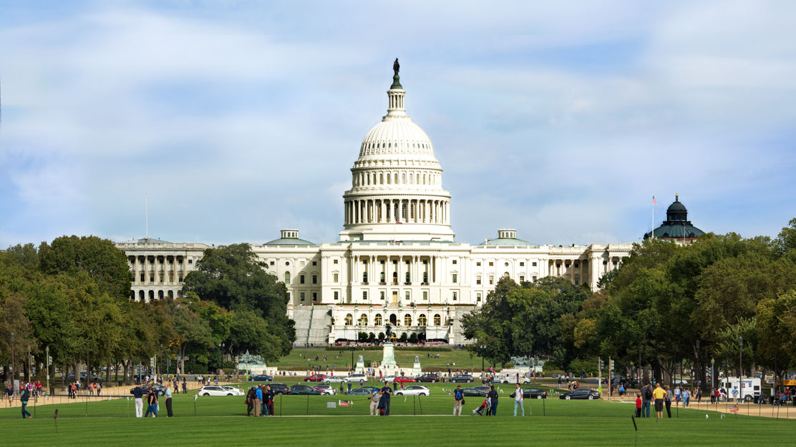

Washington
Bienvenue à Washington
En arrivant sur le National Mall, on découvre le visage officiel de la capitale américaine, celui du Capitole, des grands musées et des monuments à la gloire des héros de la nation. Mais le vrai visage de la ville est ailleurs, dans les quartiers où vivent les Washingtoniens, ceux installés ici depuis toujours, comme ceux nés ailleurs ou simplement de passage.
EWashington est une capitale, avec tout ce que cela implique : du marbre, des monuments et d'exceptionnels musées installés à l'ombre du Capitole et de la Maison-Blanche. C'est aussi une grande ville, avec des restaurants gastronomiques ou branchés, des clubs et bars à l'ambiance survoltée et des boutiques qui apparaissent et disparaissent au gré des modes. Sous son autre profil, Washington est une cité où certains ne connaissent du rêve américain que les lendemains difficiles, une capitale où l'élite vit dans un autre monde, une ville dont le gouvernement semble parfois se désintéresser alors même qu'il y réside.
ESi les habitants de la ville ont le sens de la discussion, ils ont plus encore celui de l'accueil. Alors venez vite découvrir une capitale internationale, qui a su rester suffisamment locale pour qu'on l'aime.
Les lieux à visiter
-
National Mall
À Washington comme dans toutes les capitales, il y a la ville monumentale et majestueuse, et puis les quartiers où les gens « vivent ». Si les deux sont évidemment à découvrir, il est aussi certain que l'intérêt de la capitale des États-Unis tient pour une bonne part à la beauté de ses monuments et de ses grands sites touristiques. Et c'est le long du National Mall, précisément, que sont concentrés tous les édifices symboliques de l'histoire de la nation américaine. Cette grande esplanade verte longue de trois kilomètres – elle s'étend du fleuve Potomac à la colline du Capitole – est d'ailleurs traditionnellement le lieu de tous les rassemblements et manifestations politiques.
Si le National Mall est L'adresse de la résidence du Président (la Maison-Blanche) et du siège du pouvoir législatif (le Capitole), c'est aussi là que se trouvent une série de musées absolument exceptionnels et de nombreux mémoriaux, notamment le Lincoln Memorial, rendant hommage aux héros de la nation. C'est en cela que l'on peut considérer que le Mall est non seulement le cœur de la ville mais aussi du pays tout entier. Nulle part ailleurs on ne peut voir expression plus concrète du rêve américain et du regard que la nation porte sur elle-même. Le Mall est d'ailleurs un véritable lieu de pèlerinage pour les Américains, une sorte de temple patriotique dédié au modèle politique national. Toutes les divinités vénérées par la nation y sont présentes. Le sentiment qu'ici tout est possible est palpable à chaque instant, tout comme les valeurs fondamentales inscrites dans les précieux documents conservés à bibliothèque du Congrès et aux Archives nationales, au premier rang desquelles la liberté. Le National Mall est aussi un lieu de vie. Deux équipes de Frisbee disputent une partie aux côtés d'une famille pendjabi installée pour pique-niquer. Un couple angolais prend en photo un Américain de l'Indiana et son épouse devant le Washington Monument. Sous le miroir noir du Vietnam Veterans Memorial, on découvre la photo d'un nouveau-né sur laquelle quelqu'un a écrit : « J'aurais tellement aimé que tu la connaisses, papa. » Pour le touriste, se promener là est un véritable voyage au cœur de l'identité américaine. La découverte du National Mall en lui-même – et pas seulement de tel musée ou de tel monument – offre ainsi un instantané de la vie des Américains et occupera certainement une bonne partie de votre journée.
-
Musées méconnus
Washington abrite l'une des plus grandes concentrations de musées (gratuits pour la plupart) au monde. Bon nombre d'entre eux sont envahis par la foule, en particulier le week-end, lorsque des armées de jeunes enfants transforment des lieux comme le National Air and Space Museum en véritable champ de bataille. Au vu du nombre de musées que compte la ville, il ne fait aucun doute que vous en dénicherez quelques-uns qui aiguisent votre intérêt sans pour autant vous obliger à supporter de trop fortes affluences.
Le National Museum of African Art abrite une remarquable collection d'art africain, en particulier de l'ouest du continent. Contrairement à nombre de musées consacrés au même sujet, il réunit aussi bien des œuvres modernes que traditionnelles, venant rappeler, s'il était besoin, que la créativité de l'Afrique ne se limite pas aux masques et aux percussions. À côté, la Freer Gallery et la Sackler Gallery ouvrent les portes d'un monde calme et recueilli dédié à l'art asiatique. C'est le genre d'endroit où l'on peut voir un démon tibétain lancer un regard furieux à un bouddha du Gandhara qui, lui, ne se départ pas de son sourire serein, poursuivant sa méditation au pied des linteaux de temples hindous, eux-mêmes présentés en face de peintures chinoises sur rouleau de soie et de paravents japonais… La collection d'œuvres de Whistler ne se révèle pas aussi incongrue en ces lieux qu'elle le paraît au premier abord : un certain nombre de rapprochements peuvent s'établir entre les toiles impressionnistes du peintre américain et l'esthétique abstraite des maîtres du zen. Aussi étonnant que cela puisse paraître, le jardin de sculptures du Hirshhorn Museum ne draine pas les foules. Alors, après avoir arpenté de long en large le National Mall, venez donc faire une pause dans ce lieu paisible, au milieu des œuvres de Rodin, de Jean Arp et de bien d'autres. Les lieux sont particulièrement jolis au printemps et au début de l'été. Vous ne regretterez certainement pas le prix de l'entrée à la Corcoran Gallery. Le beau bâtiment conserve une remarquable collection d'art américain et accueille des expositions temporaires, qui peuvent sans peine rivaliser en qualité avec celles des musées de la Smithsonian – l'institution gérant la plupart des grands musées de la ville. Certes loin d'être méconnus, les niveaux supérieurs du Smithsonian American Art Museum et de la National Portrait Gallery subissent toutefois rarement l'assaut des visiteurs – probablement parce qu'il y a déjà tant à voir dans les étages inférieurs.
-
U Street
Foyer des émeutes qui ont déchiré la ville en 1968, après l'assassinat de Martin Luther King, le carrefour de U Street et de 14th Street NW se trouve aujourd'hui au cœur d'un quartier qui s'embourgeoise rapidement. U Street offre en effet ce que beaucoup appellent un « mode de vie abordable » – à savoir cours de yoga et de Pilates, bons restaurants exotiques, boutiques branchées –, mettant à portée de nombreuses bourses ce qui était autrefois réservé à l'élite. Une vraie bénédiction pour les jeunes bobos de la ville. Interrogé sur le plus grand changement intervenu dans le quartier ces vingt dernières années, un habitant répond : « Eh bien maintenant, les Blancs font leur jogging ici. » En fait, les Blancs – et les Noirs, et les autres – ne se contentent pas de courir dans les rues de ce qui était le Harlem de Washington. Ils font du shopping chez Nana, dans les coopératives d'artistes comme Dekka et ailleurs, entament au Stetson's une virée dans les bars et écument les restaurants pour goûter à toutes sortes de cuisines, du chicken and waffles (poulet et gaufres) de chez Crème aux half smokes généreusement assaisonnés de moutarde et de piment de chez Ben's (photo page de droite). Certains pensent que U Street préfigure l'évolution de bien d'autres quartiers de la capitale, amenés à sacrifier leur âme pour mieux attirer les yuppies…
-
Georgetown
Georgetown est le nom à la fois de l'une des universités les plus prestigieuses du pays et du fief de l'aristocratie washingtonienne. Le long de ses belles rues bordées d'arbres et de maisons en brique, on croise des diplomates déposant leurs enfants dans un lycée privé et des universitaires installés devant un verre de merlot et débattant du théâtre expérimental. Quand la semaine des étudiants se termine, le quartier se transforme radicalement ! Enfin à Georgetown, l'ambiance reste quand même toujours un peu guindée, même dans les bars, même la nuit. Mais c'est quand même ici et pas ailleurs que l'on voit les représentants de la haute société américaine se laisser aller, par exemple chez Mr Smith's ou Mie N Yu. Il n'est pas étonnant que les classes aisées aient choisi ce quartier. Les restaurants proposent un cadre romantique (JFK a demandé à Jackie de l'épouser lors d'un dîner au Martin's) et une cuisine d'influences variées, à des prix parfois étonnamment abordables. Les boutiques feront tourner la tête aux accros du shopping, qui se précipiteront certainement chez Relish. Et puis le quartier a joliment conservé ses édifices anciens – comme l'Old Stone House, le plus vieux bâtiment de Washington. En se tenant bien à l'écart du trafic de M Street, le piéton-touriste fera ici une promenade idyllique, en particulier à la tombée de la nuit.
-
Base-ball, FOootball, Basket
Les Américains disent souvent que le Nord-Est est le fief du base-ball, le Sud le bastion du football et le basket l'affaire des Afro-Américains. Washington rassemble des représentants de ces trois groupes de population, et personne ici ne se limite à un seul sport. Les Washingtoniens aiment peu la réputation de leur ville, qui ne serait peuplée que de résidents de passage ou, en tout cas, venus d'ailleurs… Les jours de match sont donc pour les habitants l'occasion d'affirmer la vigueur de leur sentiment identitaire. Quant à ceux qui viennent d'ailleurs, justement, rien de mieux pour s'intégrer que d'aller encourager les Nationals au Nationals Stadium, soutenir les Redskins au FedExField (www.fedex.com/us/sports/fedexfield), ou bien regarder un match dans un pub de Capitol Hill – le Hawk and Dove par exemple. Au stade ou au bar, on se retrouve en terrain neutre, on laisse de côté les opinions politiques et on aborde tous les autres sujets. Et si le sport pouvait même être une façon d'introduire de nouvelles traditions dans la grande histoire de l'Amérique ? Tout le monde ici a encore en tête l'image de cet élève d'une école privée et de cet ouvrier salvadorien tombant dans les bras l'un de l'autre dans les tribunes du stade RFK pour célébrer un but des DC United.
-
Capitol Hill
Capitol Hill est certes au cœur de la vie politique du pays : c'est ici que se trouvent trois grandes institutions : le Capitole, la Cour suprême et la bibliothèque du Congrès. Mais c'est aussi un quartier où il fait bon vivre et où les belles maisons qui bordent les rues sont pour la plupart habitées par des familles installées depuis des générations à Washington. On dit parfois en plaisantant que Washington est le « Hollywood pour les moches », en référence à la concentration d'acteurs de la politique présents ici. Promenez-vous un soir de semaine le long de Mass Avenue NE et vous avez toutes les chances de tomber sur l'une ou l'autre de ces « stars » – qui, soit dit en passant, sont loin d'être toutes laides – en train de promener son chien… Le week-end, tout le monde, du directeur de cabinet au membre du comité de quartier, se retrouve à l'Eastern Market pour acheter des fleurs, des fruits et des légumes, et les meilleurs sandwichs aux huîtres de toute la ville. Capitol Hill, fief de la classe politique, apporte la preuve qu'une vie de quartier est possible même dans une ville où une partie de la population se renouvelle plus ou moins tous les quatre ans, au gré des élections.
-
Adams Morgan et
Dupont CircleAdams Morgan et Dupont Circle sont depuis des décennies les deux principaux foyers d'effervescence le soir à Washington, même si de nouveaux restaurants, bars et clubs branchés ouvrent aujourd'hui ailleurs, notamment dans Columbia Heights et H Street. Voilà donc deux quartiers où faire la fête… mais qu'il serait dommage de ne réduire qu'aux sorties. C'est à Adams Morgan qu'ont débarqué Éthiopiens, Ghanéens, Soudanais, Salvadoriens, Nicaraguayens et Guatémaltèques, entre autres. Dans cette mosaïque culturelle, 18th Street NW est de loin la rue la plus animée les soirs de fin semaine. Et aucun séjour à Washington ne serait complet sans une descente ici, qui se terminera sûrement à l'aube par une empanada espagnole ou une grande part de pizza. Plus chic, Dupont Circle offre tout autant de possibilités de sorties. Cette partie de la ville fut en effet longtemps LE quartier branché de Washington, le centre de la vie intellectuelle et artistique. Et dans ses cafés, bistrots et restaurants se croisent toujours la (très active) communauté gay et lesbienne de la ville, les diplomates de plusieurs dizaines d'ambassades, les fonctionnaires d'organismes internationaux, ainsi que les experts de nombreux instituts dédiés aux sciences sociales.
-
Columbia Heights
C'est souvent aux limites des grandes villes que se trouvent les quartiers prometteurs, là où les loyers sont bas et où convergent immigrés, artistes et esprits novateurs. Il y a dix ans, U Street occupait cette place. Celle-là revient désormais au quartier de Columbia Heights, situé au nord de la capitale. Le Washington traditionnel reste bien présent ici. Pour s'en convaincre, il suffit de passer un moment dans un bar comme le Raven dans Mt Pleasant Avenue. Dans cette même rue, les Salvadoriens de la ville font leurs courses, emmènent leurs enfants à l'école et s'intègrent, modelant le nouveau visage de la société américaine. Allez donc au Dos Gringos pour voir ce qui se passe lorsque l'Amérique centrale et l'Amérique du Nord fraternisent. De ce brassage de Washingtoniens de souche et de nouveaux arrivés émergent des hommes et des femmes pleins d'audace et d'énergie qui, dans ce quartier où tout semble possible, montent une boîte, ouvrent un restaurant, aménagent un bar. Sortant du Hitching Post, un diner américain traditionnel plus vrai que nature, on découvre quelques centaines de mètres plus bas le W Domku, un café- restaurant spécialisé dans la cuisine scandinave et d'Europe de l'Est. Sa présence pourrait sembler incongrue, mais dans ce quartier où tout bouge et se renouvelle, où les habitants viennent des quatre coins de la planète, au fond, rien n'étonne…
Découvrez la beauté de Washington
